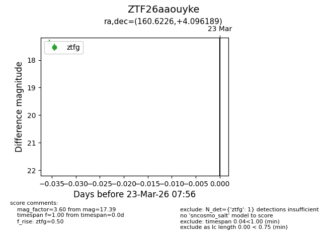
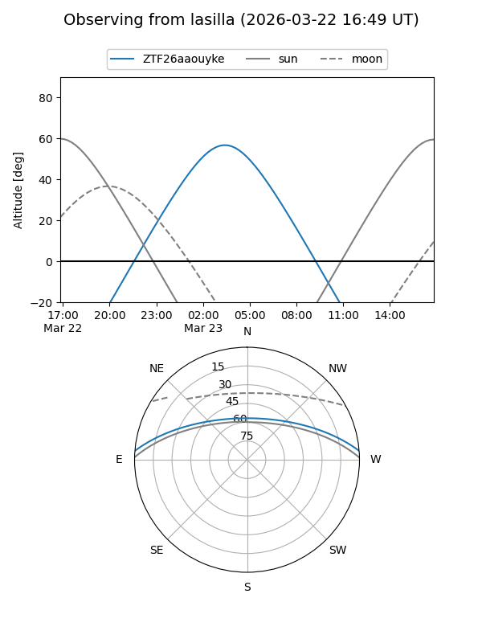
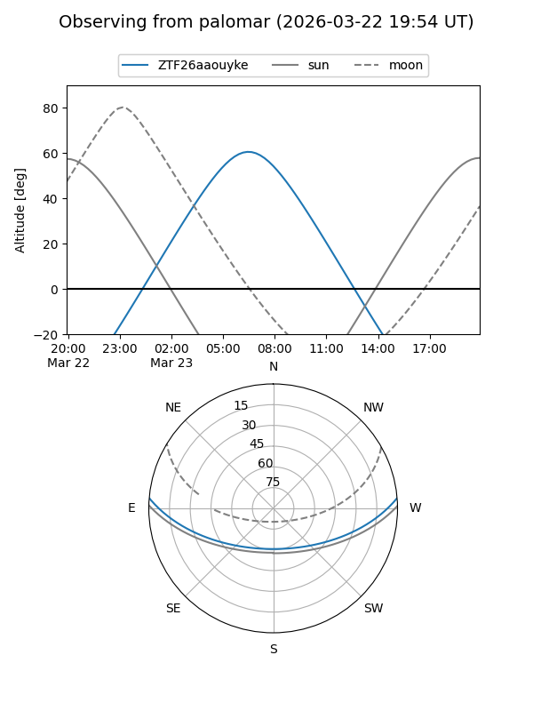

ZTF26aaouyke
Target ZTF26aaouyke at 2026-03-23 07:58
Aliases and brokers:
FINK: link
Lasair: link
ALeRCE: link
alt names
ZTF26aaouyke (ztf,fink_ztf)
Coordinates:
equatorial (ra, dec) = 160.6226,+4.09619
equatorial (HMS+DMS) = 10:42:29.42,+04:05:46.28
galactic (l, b) = (244.0460,+51.57707)
Flags:
Photometry:
last ztfg=17.39
1 ztfg detections
Lightcurve

Visibility


Additional plots